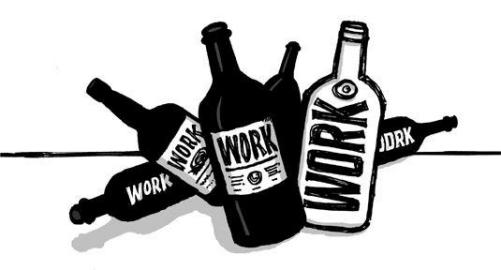

{% include JB/setup %}
{% raw %}
<div>

<h2 id="filepos35490" class="calibre19"><span class="calibre2"><a class="calibre13"></a><strong class="calibre14">Why grow?</strong></span></h2><div class="calibre4"></div>
<p class="calibre7">People ask, "How big is your company?" It's small talk, but they're not looking for a small answer. The bigger the number, the more impressive, professional, and powerful you sound. "Wow, nice!" they'll say if you have a hundred-plus employees. If you're small, you'll get an <em class="italic1">"Oh ...</em> that's nice." The former is meant as a compliment; the latter is said just to be polite.</p>
<p class="calibre17">Why is that? What is it about growth and business? Why is expansion always the goal? What's the attraction of big besides ego? (You'll need a better answer than "economies of scale.") What's wrong with finding the right size and staying there?</p>
<p class="calibre17">Do we look at Harvard or Oxford and say, "If they'd only expand and branch out and hire thousands more professors and go global and open other campuses all over the world <em class="italic1">... then</em> they'd be great schools." Of course not. That's not how we measure the value of these institutions. So why is it the way we measure businesses?</p>
<p class="calibre17">Maybe the right size for your company is five people. Maybe it's forty. Maybe it's two hundred. Or maybe it's just you and a laptop. Don't make assumptions about how big you should be ahead of time. Grow slow and see what feels right--premature hiring is the death of many <a class="calibre16"></a>companies. And avoid huge growth spurts too--they can cause you to skip right over your appropriate size.</p>
<p class="calibre17">Small is not just a stepping-stone. Small is a great destination in itself.</p>
<p class="calibre17">Have you ever noticed that while small businesses wish they were bigger, big businesses dream about being more agile and flexible? And remember, once you get big, it's really hard to shrink without firing people, damaging morale, and changing the entire way you do business.</p>
<p class="calibre17">Ramping up doesn't have to be your goal. And we're not talking just about the number of employees you have either. It's also true for expenses, rent, IT infrastructure, furniture, etc. These things don't just happen to you. You decide whether or not to take them on. And if you do take them on, you'll be taking on new headaches, too. Lock in lots of expenses and you force yourself into building a complex businesss--one that's a lot more difficult and stressful to run.</p>
<p class="calibre17">Don't be insecure about aiming to be a small business. Anyone who runs a business that's sustainable and profitable, whether it's big or small, should be proud.</p>
<p class="calibre3"><a class="calibre16"></a></p><div class="calibre4"></div>
<div class="mbppagebreak" id="calibre_pb_17"></div></div>

{% endraw %}

